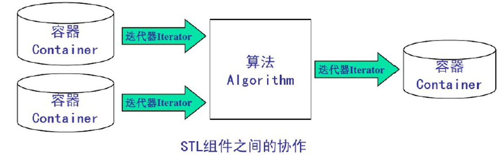

# STL 迭代器
接着学习 STL 迭代器。
# STL 迭代器简介
- STL 迭代器用于指向容器中的一个元素，有
const迭代器和非const迭代器两种； - 通过迭代器可以读取它指向的元素，通过非常量迭代器还能修改其指向的元素，迭代器用法和指针类似；
- 迭代器是容器和算法的桥梁，STL 容器和算法是分离的，连接它们的是迭代器。

- 定义一个容器类的迭代器的方法可以是：
容器类名::iterator 变量名， 如vector<int>::iterator vIt容器类名::const_iterator 变量名， 如vector<int>::const_iterator vIt
- 访问一个迭代器指向的元素
*迭代器变量名
- 不同容器上支持的迭代器功能强弱有所不同，容器的迭代器的功能强弱决定了该容器是否支持 STL 中的某种算法。
例如： STL 通用的排序算法需要通过随机迭代器来访问容器中的元素，那么 list 容器不支持随机存储就 不能用这个函数，只能用自带的排序函数排序。
- 迭代器按功能由弱到强分为 5 种
1 > 输入：Input iterators 提供对数据的只读访问；
1 > 输出：Output iterators 提供对数据的只写访问；
2 > 正向：Forward iterators 提供读写操作，并能向前推进迭代器；
3> 双向：Bidirectional iterators 提供读写操作，并能向前和向后操作；
4 > 随机：Random access iterators 提供读写操作，并能在数据中随机移动。
标号大的迭代器拥有编号小的迭代器的功能，能当编号小的迭代器使用。
- 不同的迭代器所能进行的操作
所有迭代器：前后自增（p++ / ++p）
输入迭代器：访问（*p）、赋值（p=p1）、判断（p==p1 /p!=p1）
输出迭代器：访问（*p）、赋值（p=p1）
正向迭代器：上面全部
双向迭代器：上面全部，前后自减（p-- /--p）
随机访问迭代器：上面全部，以及如下方式：
p+=i; | |
p-=i; | |
p+i; | |
p-i; | |
p[i]; | |
p<p1; | |
p<=p1; | |
p>p1; | |
p>=p1; |
算法会要求使用某些迭代器，例如 sort() 函数要求使用随机迭代器：
template< class RandomIt > void sort( RandomIt first, RandomIt last );
容器所支持的迭代器类别：
| 容器 | 迭代器类别 |
|---|---|
| vector | 随机 |
| deque | 随机 |
| list | 双向 |
| set/multiset | 双向 |
| map/multimap | 双向 |
| stack | 不支持迭代器 |
| queue | 不支持迭代器 |
| priority_queue | 不支持迭代器 |
# 迭代器的常见操作
迭代器的常见操作：
void Itertaor_Test() | |
{ | |
int nArr[] = { 11,22,33,44,55,66,77,88,99 }; | |
vector<int> v1(nArr, nArr + 9); | |
cout << "遍历容器v1:"; | |
for (size_t i = 0; i < v1.size(); i++) | |
{ | |
cout << v1[i] << " "; | |
} | |
cout << endl; | |
// 初始化非常量迭代器 | |
vector<int>::iterator vit = v1.begin(); | |
// 初始化常量迭代器 | |
vector<int>::const_iterator cvit = v1.cbegin(); | |
cout << "非常量迭代器 *vit:" << *vit << endl; | |
cout << "常量迭代器 *cvit:" << *cvit << endl; | |
cout << "常量迭代器cvit.operator*():" << cvit.operator*() << endl; | |
// 接下来比较迭代器的大小 | |
vector<int>::iterator vit1 = v1.begin(); | |
vector<int>::iterator vit2 = vit1.operator+(6); | |
vector<int>::iterator vit3 = vit1+6; | |
vector<int>::iterator vit4 = vit2; | |
vit4 += 2; | |
vector<int>::iterator vit5 = vit3; | |
vit5--; | |
cout << "vit1:vit2:vit3:vit4:vit5:\t" << *vit1 << ":" << *vit2 << ":" << *vit3 << ":" << *vit4 << ":" << *vit5 << endl; | |
// 比较迭代器 | |
cout << endl; | |
cout << "比较迭代器" << endl; | |
cout << endl; | |
if (vit1>vit2) | |
{ | |
cout << "vit1>vit2" << endl; | |
} | |
else | |
{ | |
cout << "vit1<vit2" << endl; | |
} | |
if (vit3 == vit2) | |
{ | |
cout << "vit3=vit2" << endl; | |
} | |
else | |
{ | |
cout << "vit3!=vit2" << endl; | |
} | |
if (vit4 > vit2) | |
{ | |
cout << "vit4>vit2" << endl; | |
} | |
else | |
{ | |
cout << "vit4<vit2" << endl; | |
} | |
if (vit5 > vit2) | |
{ | |
cout << "vit5>vit2" << endl; | |
} | |
else | |
{ | |
cout << "vit5<vit2" << endl; | |
} | |
} |
执行结果如下：
遍历容器 v1:11 22 33 44 55 66 77 88 99 | |
非常量迭代器 *vit:11 | |
常量迭代器 *cvit:11 | |
常量迭代器 cvit.operator*():11 | |
打印迭代器的值： vit1:vit2:vit3:vit4:vit5: 11:77:77:99:66 | |
[===== 比较迭代器 ====] | |
vit1<vit2 | |
vit3=vit2 | |
vit4>vit2 | |
vit5<vit2 |
# 在容器中使用自定义对象
在 STL 中使用自定义对象有一下两种情况：
1. 向 Vector、Deque、List、Stack、Queue 容器中添加自定义对象，实际是将对象复制一份放到容器里，要调用对象的拷贝函数时，如果定义了拷贝函数则调用定义的拷贝函数，如果没定义则调用默认的拷贝函数；
2. 向 Set 和 Map 容器中添加自定义对象也是将对象复制一份放到容器了，不同的是：Set 和 Map 容器添加自定义对象的时候要实现比较器函数。
# 代码实现
// STL-CustomObject.cpp : 此文件包含 "main" 函数。程序执行将在此处开始并结束。 | |
// | |
#include<iostream> | |
using namespace std; | |
#include<vector> | |
#include<algorithm> | |
#include<string> | |
class Person { | |
public: | |
Person(string name, int age) { | |
this->m_Name = name; | |
this->m_Age = age; | |
} | |
string m_Name; | |
int m_Age; | |
void Print() { | |
cout << "Name: " << this->m_Name << endl; | |
cout << "Id: " << this->m_Age << endl; | |
} | |
}; | |
void myPrintFunc1(Person p) { | |
p.Print(); | |
} | |
// 存放对象 | |
void test1() { | |
vector<Person> v; | |
Person p1("小黑", 10); | |
Person p2("小白", 20); | |
Person p3("小绿", 30); | |
v.push_back(p1); | |
v.push_back(p2); | |
v.push_back(p3); | |
// 用迭代器调用对象的函数 | |
cout << "Test1 用迭代器调用对象的函数" <<endl; | |
vector<Person>::iterator vit = v.begin(); | |
vit->Print(); | |
// 遍历 | |
cout << "Test1 遍历" << endl; | |
for_each(v.begin(), v.end(), myPrintFunc1); | |
} | |
void myPrintFunc2(Person* p) { | |
p->Print(); | |
} | |
// 存放指针 | |
void test2() { | |
vector<Person*> v; | |
Person p1("小王", 10); | |
Person p2("小李", 20); | |
Person p3("小明", 30); | |
v.push_back(&p1); | |
v.push_back(&p2); | |
v.push_back(&p3); | |
// 用迭代器调用对象的函数 | |
cout << "Test2 用迭代器调用对象的函数" << endl; | |
vector<Person*>::iterator vit = v.begin(); | |
(*vit)->Print(); | |
// 遍历 | |
cout << "Test2 遍历" << endl; | |
for_each(v.begin(), v.end(), myPrintFunc2); | |
} | |
int main() { | |
test1(); | |
test2(); | |
return 0; | |
} |
执行结果如下：
Test1 用迭代器调用对象的函数 | |
Name: 小黑 | |
Id: 10 | |
Test1 遍历 | |
Name: 小黑 | |
Id: 10 | |
Name: 小白 | |
Id: 20 | |
Name: 小绿 | |
Id: 30 | |
Test2 用迭代器调用对象的函数 | |
Name: 小王 | |
Id: 10 | |
Test2 遍历 | |
Name: 小王 | |
Id: 10 | |
Name: 小李 | |
Id: 20 | |
Name: 小明 | |
Id: 30 |